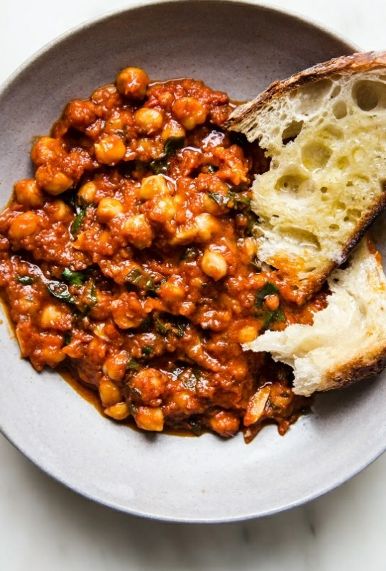

Braised Chickpeas with Kale

Description
Another few-ingredient, scour the pantry recipe, coming in hot! Smoked paprika and jarred marinara sauce
punch up a simple vegetarian dinner of tomato-y braised chickpeas with kale.
Ingredients
- 1 can of chickpeas, rinsed and drained
- 4 tbsp of olive oil
- 4 garlic cloves, thinly sliced
- 1 jar of your favorite marinara sauce or similar
- 2 tsp of smoked paprika
- 2 cups finely chopped kale
Steps
- In a large skillet, heat 4 tbsp of olive oil over medium heat. Add the drained chickpeas and cook until they begin to brown.
- Add the garlic and paprika and stir until fragrant, about 2 minutes.
- Pour in the sauce and simmer until the sauce begins to thicken, about 10 minutes. Add the greens and stir until just wilted.
- Serve warm over crusty break or crispy potatoes. If you feel like it, top with your favorite cheese.